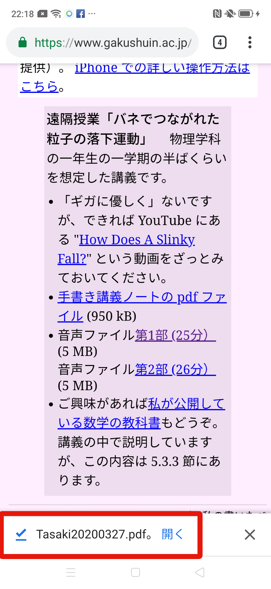
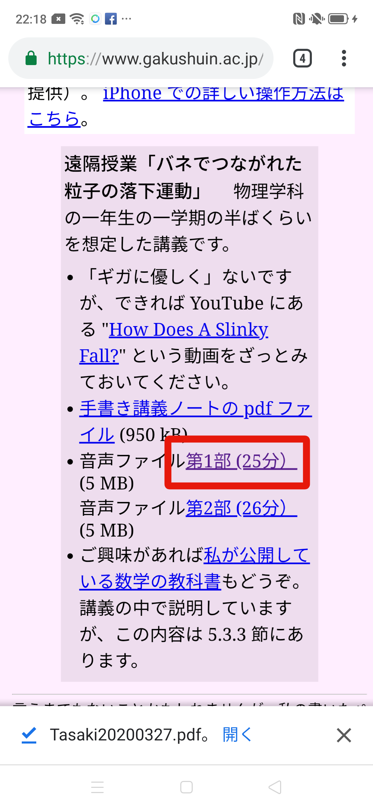
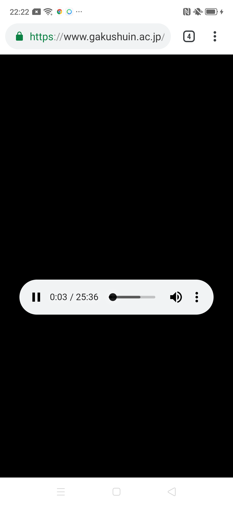
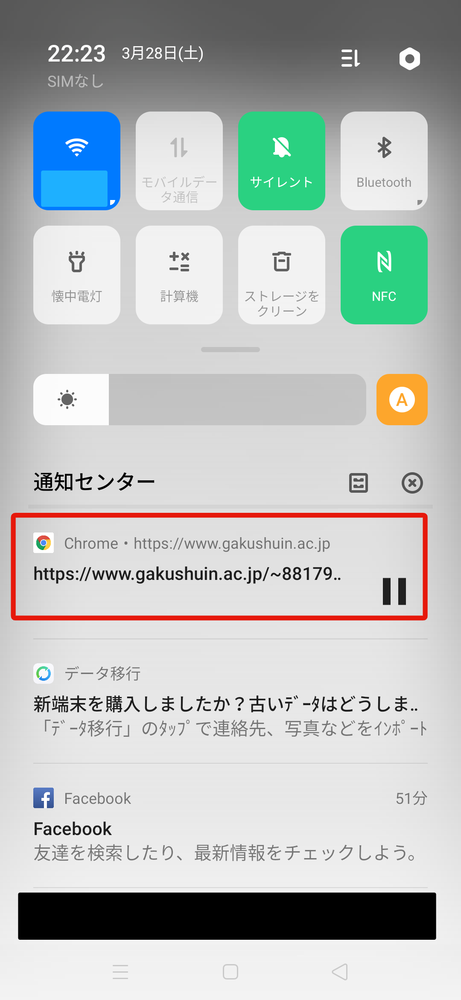
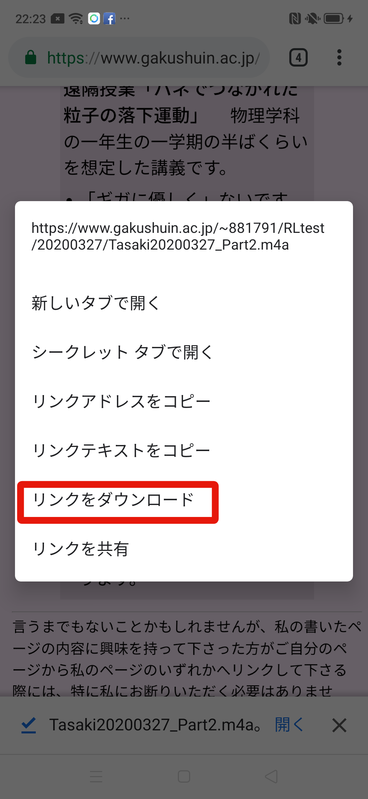

元のページへ
アンドロイド搭載のスマホでの聴講のしかた
公開 2020 年 3 月 28 日 / 更新 2020 年 3 月 28 日
以下、KT さんに教えてもらったことをそのまま掲載します（あまり時間がないのでいい加減なデザインのページで申し訳ありません）。
画像もご提供いただきました。
全てプリインストールのアプリを使用しています
講義ノートのダウンロード
PDFファイルのリンクをブラウザでタップしPDFをダウンロード

ファイルマネージャー > 書類 ディレクトリに格納され、PDFファイルを閲覧可能になる
音声をブラウザで再生する場合（これが標準）
音声のリンクをタップする

音声再生がされることを確認

クイック設定画面でgakushuin.ac.jpになっていることを確認

音声ファイルをローカルに保存する場合
音声リンクを長押しし、開いたメニューで「リンクをダウンロード」をタップ

ファイルマネージャー > オーディオディレクトリに格納され、音楽アプリで再生可能になる
元のページへ
言うまでもないことかもしれませんが、私の書いたページの内容に興味を持って下さった方がご自分のページから私のページのいずれかへリンクして下さる際には、特に私にお断りいただく必要はありません。
田崎晴明
学習院大学理学部物理学教室
田崎晴明ホームページ
hal.tasaki@gakushuin.ac.jp